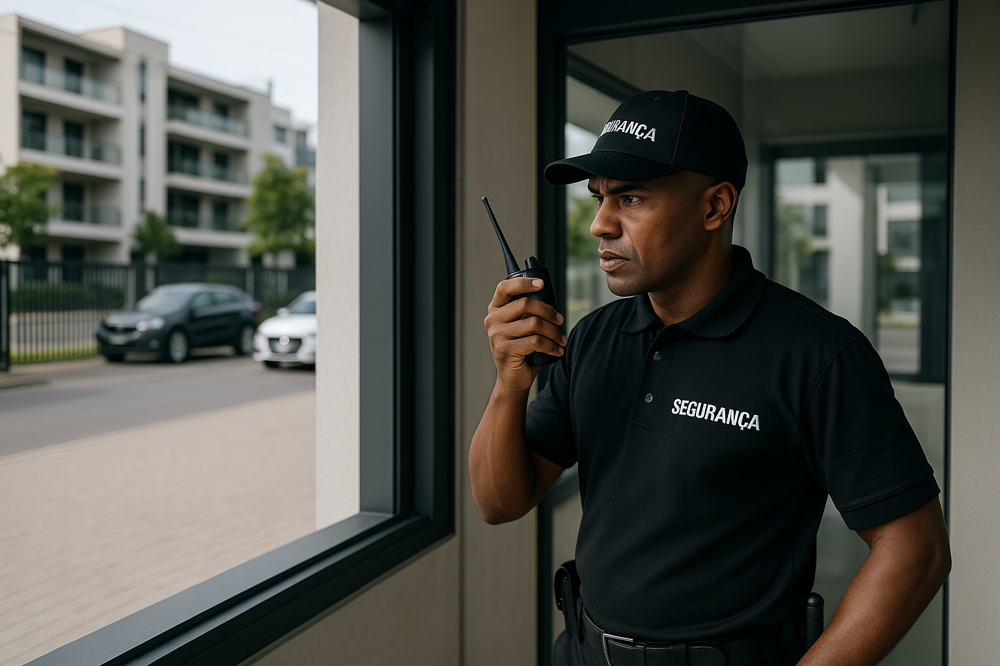
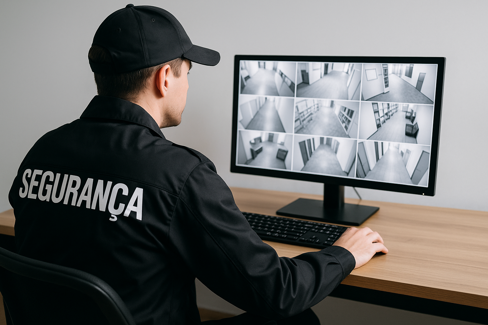

Portaria Presencial e Remota
A Front Security oferece soluções completas de portaria, seja presencial ou remota, garantindo segurança, praticidade e economia. Nossos profissionais são treinados para lidar com qualquer situação, desde a recepção até o controle de acesso com tecnologia de ponta.
Portaria Presencial
Controle físico de entrada e saída, abordagem profissional, inibição de ameaças e atendimento humanizado no local.

Portaria Remota
Monitoramento 24h com liberação remota, redução de custos operacionais e gestão digital em tempo real.
Diferenciais Front Security
- Equipe qualificada e certificada.
- Tecnologia de ponta integrada ao atendimento.
- Planos sob medida para cada cliente.
Solicite agora seu orçamento
Entre em contato com a nossa equipe comercial e solicite uma proposta personalizada para o seu negócio. Oferecemos atendimento em toda a região, com visitas técnicas para diagnóstico e elaboração do plano ideal para você.
Solicitar Orçamento no WhatsApp